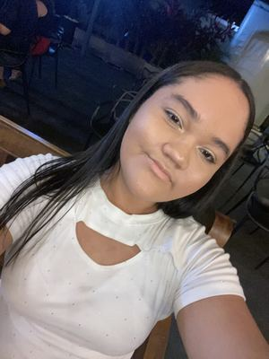

Leticia Silva
Sobre mim

Olá! Meu nome é Leticia Silva. Estou estudando desenvolvimento de software e aprendendo a criar páginas web com HTML, CSS e JavaScript.
Gosto de edição de vídeos, criação de conteúdo digital e design. Quero continuar desenvolvendo minhas habilidades e criar projetos úteis e criativos.
Meus estudos
Estou cursando o programa BYU–Pathway Worldwide e aprendendo algo novo a cada etapa.